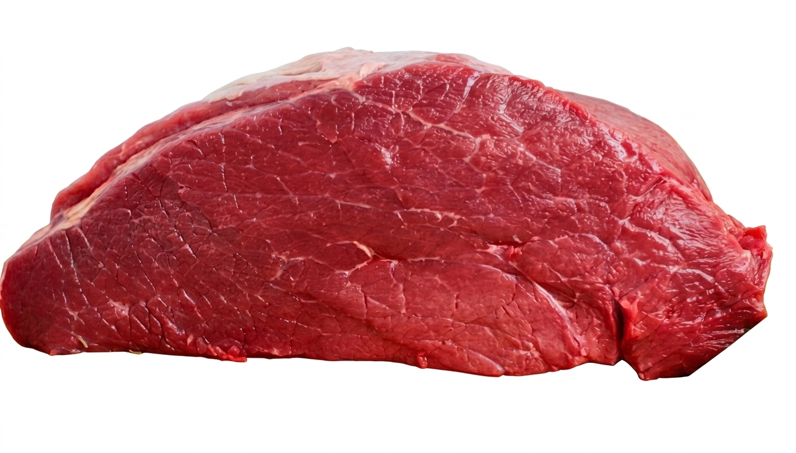

Mapa CarneCerta
Versatilidade premium para bife e panela
O coxao mole equilibra maciez e rendimento, com otimo comportamento em bifes finos e coccao delicada.

Ideal para • bifes • panela • forno
Maciez
4/5
Boa
Gordura
2/5
Baixa
Sabor
3/5
Equilibrado
Abrir recomendador inteligente
Coxao Mole
Um corte traseiro democratico para quem quer maciez agradavel sem perder versatilidade no preparo.
O coxao mole vai bem em bifes do dia a dia, preparos recheados e receitas de panela menos longas. Quando bem fatiado, oferece textura mais uniforme e mastigacao confortavel.
Bifes do dia a dia
Boa uniformidade
Facil de fatiar
4.5
Leitura mais versatil
Excelente custo de entrada para bifes e receitas rapidas, especialmente quando a prioridade e praticidade com boa maciez.
Ideal para
Dica do açougueiro IA
Peca o corte em fatias uniformes e sele rapidamente dos dois lados para preservar suculencia nos bifes finos.